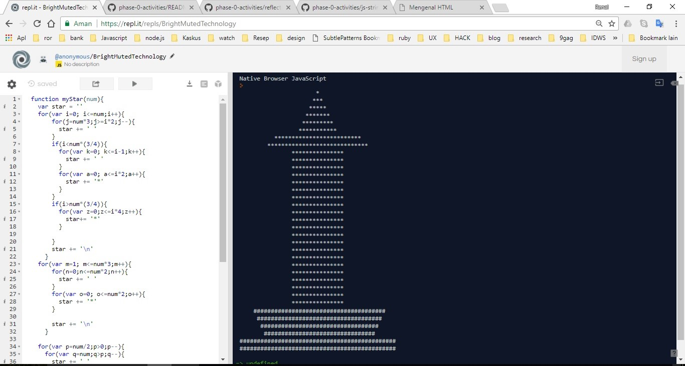

Week 2
Setelah melewati pembelajaran di minggu pertama mengenai HTML & CSS dasar. Akhirnya saya bertemu dengan Bahasa pemograman Javascript di minggu ke dua ini. Dengan latar belakang saya sebagai sarjana Administrasi Bisnis, Bahasa pemograman merupakan hal yang sangat asing bagi saya. Beruntung sebelum saya bergabung dengan Hacktiv8, saya sempat belajar pemograman secara autodidact mungkin selama 2-3 bulan, karena terbatas oleh pekerjaan juga yang semakin banyak yang harus diselesaikan.
Selama materi javascript ini berlangsung tentunya selalu ada tugas-tugas yang mudah dikerjakan dan ada juga yang sulit dikerjakan. Menurut saya tugas yang cukup sulit dikerjakan adalah membuat loop asterisk, atau membuat sebuah pola dengan sebuah looping. Dalam 1 tugas terdapat 3 soal yaitu membuat sebuah 1 garis, sebuah kotak, dan segitiga siku-siku.
Materi ini mengingatkan saya saat belajar secara otodidak ada sebuah challange yang cukup unik lagi, yaitu membuat sebuah pola belah ketupat, dan membuat segitiga pascal.Beruntung, tugas yang di berikan membuat saya mencoba untuk lebih mengeksplore kembali challange yang pernah saya temukan sebelumnya yang pertama yaitu membuat sebuah Pola belah ketupat. Ada yang cukup membingungkan untuk pola ini, ya membuat sebuah baris kosong agar pola bisa mulai dari tengah, yang menarik adalah baris kosong tersebut merupakan sebuah pola juga, bedanya hanya di isi dengan spasi. Untuk challange pertama ini saya cukup kesulitan membuatnya, dikarenakan saya benar-benar mengeksplore bagaimana pola dari sebuah nested loop ini.
Saya mulai mengerjakan challange pertama ini malam sesudah isa, dan baru selesai sekitar jam 11, cukup lama bagi saya sebagai seorang pemula. Tapi hal ini membuat saya cukup mudah saat ingin mengganti dalam bentuk lain. Seperti halnya membuat sebuah logo Mitsubishi. Challange tersebut saya dapatkan ketika saya berkonsultasi dengan salah satu instruktur yaitu ka Dimitri keesokan harinya, mengenai keefektifan koding untuk belah ketupat.
Setelah selesai sebuah materi, langsung saya mencoba mengerjakan dengan metode 1 loop induk, disini membuat saya kesulitan karena 1 loop induk ini harus bisa d bagi 3 bagian yang hasilnya nanti tidak akan simetris jika angka yang dimasukan adalah angka ganjil. Akhirnya saya mencoba menggunakan metode ke 2 dan ya tidak lama cukup memakan waktu 20 menit saya sudah mulai bisa membuatnya, dan saya coba iseng lagi membuat sebuah logo semen SCG, dan teringat juga saat pembelajaran berlangsung saya sempat membuat joke mengenai materi live koding, bahwa mungkin nnti soalnya akan disuruh membuat sebuah monas.
Karena belah ketupat dan mitsubishi sebelumnya sudah ada yang membuat, akhirnya saya mencoba membuat sebuah monas yang semula joke, sekarang benar-benar saya iseng coba buat. dan hasilnya masih simple seperti ini, belum terlalu detail:

Senin depan adalah live coding pertama bagi kami Red Fox, dengan tugas yang sudah selesai lebih awal. Kami cukup kebingungan untuk memperdalam kembali mengenai materi di week-2 ini, karena jika hanya sekedar membaca dan mencoba kembali tugas yang diberikan rasanya membosankan. Akhirnya saya coba share beberapa soal dari coderbyte dan pertanyaan dari Andri yang sempat dilontarkan saat kelas berlangsung yaitu mengenai mencari bilangan prima. Dengan adanya challange personal tersebut tentunya membuat kami semakin memahami menggunakan loop, terlebih menggunakan kondisi dalam loop. Besar harapan kami agar mampu menghadapai segala macam persoalan yang ada.


Copy Right © 2018 Renal Apriansyah. All Right Reserved